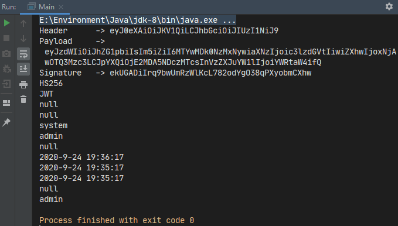

JWT入门以及在java中的使用
一、介绍

1、什么是JWT
JWT即JSON Web Tokens，它是一种紧凑的、URL安全的方法，用于表示要在双方之间传输的声明（claims）。JWT中的声明被编码为一个JSON对象，该对象被用作JSON Web签名（Signature）（JWS）结构的有效载荷（payload）或JSON Web加密（JWE）结构的明文，从而能够使用消息认证码（MAC）和/或加密算法对声明进行数字签名或完整性保护。
JWT是一个开放标准（RFC 7519），它定义了一种紧凑且自包含的方式，用于在各方之间安全地将信息作为JSON对象传输。由于此信息是经过数字签名的，因此可以被验证和信任。可以使用密钥（通过HMAC算法）或RSA、ECDSA算法的公钥/私钥对JWT进行签名。
简单来说，JWT定义了一种结构标准，其使用JSON的表达方式，通过编码为一段字符串来传递令牌信息。
2、什么时候使用JWT
- 授权：这是使用JWT的最常见方案。一旦用户登录，每个后续请求将包括JWT，从而允许用户访问该令牌允许的路由，服务和资源。单点登录是当今广泛使用JWT的一项特点，因为它的开销很小并且可以在不同的域中轻松使用。
- 信息交换：JWT是在各方之间安全传输信息的好方法。因为可以对JWT进行签名（例如：使用公钥/私钥对），所以您可以确保发送者就是他们所说的那样。此外，由于签名是使用标头和有效负载计算的，因此还可以验证内容是否遭到篡改。
二、JWT的结构
通过上面的介绍，也许你还无法完全理解JWT是什么，那么下面从JWT的结构来认识它。JWT结构是紧凑的，它由.分为三部分：
- 标头（Header）
- 有效负载（Payload）
- 签名（Signature）
类似下面这样（内容已被编码，以.分割没有换行符，仅展示用）

1、标头
标头通常由两部分组成：令牌的类型（即JWT）和使用的签名算法，如HMAC SHA256或RSA。例如
1 | { |
然后，这个JSON被Base64Url编码，作为JWT的第一部分。
2、有效负载
这一部分包含声明（claims）。声明是有关实体（通常是用户）和其他数据的声明，其有以下三种类型：已注册的（官方定义），公共声明和私有声明。
下面是JWT定义的7个官方字段，这是一组预定义的、推荐的非强制性的字段，以提供一组实用的、可互操作的声明。
- iss (issuer)：签发人
- exp (expiration time)：过期时间
- sub (subject)：主题
- aud (audience)：受众（JWT的接受者）
- nbf (Not Before)：生效时间
- iat (Issued At)：签发时间
- jti (JWT ID)：编号
因为JWT紧凑的设计原则，所以字段名称简写为仅三个字母
除了上面7个官方已注册的字段声明，还有一些公共的，参考IANA JSON Web Token注册表。
除此以外，为了在使用JWT的各方之间共享信息而创建的，可以使用自定义字段的私有声明，这些声明既不是已注册的，也不是公共的。
可能的示例：
1 | { |
然后同样被Base64Url编码，作为JWT的第二部分
3、签名
签名用于验证消息在此过程中没有被更改，并且对于使用私钥进行签名的令牌，它还可以验证JWT的发送者的身份是真实的。
这一部分使用在标头指定的签名算法（默认是 HMAC SHA256），以及指定的密钥（secret）通过以下方式创建
1 | HMACSHA256( |
注意：这里的.不是生成后的token里的.，而是用于校验签名解码时分割header和payload的。
因为JWT使用的编码算法是可解码的。所以不要把敏感信息储存在JWT中（如密码）
4、Base64Url
JWT 作为一个令牌（token），有些场合可能会放到 URL 的参数中。原Base64编码有三个字符
+、/和=，在 URL 里面有特殊含义不能直接使用，所以要稍作修改：=被省略、+替换成-，/替换成_。这就是 Base64URL 算法。
三、Java-JWT
因为JWT设计的特性，所以可以通过各种编程语言来实现用于令牌签名/验证的库在不同的编程语言中使用JWT。
这一节将介绍由java语言实现的JWT库：java-jwt
1、安装
新建一个普通的maven项目，不选择原型，导入依赖：
1 | <dependency> |
2、创建并签署令牌
先定义两个常量，分别是使用的算法类型（包含密钥）和签发人，便于后面验证时也能使用
1 | private static final Algorithm ALGORITHM = Algorithm.HMAC256("secret"); |
通过JWT.create()静态方法来创建JWT构建对象，使用withXXX可链式调用的方法来添加字段，最后调用sign(ALGORITHM)创建一个给定算法的JWT字符串
1 | static String getToken(){ |
3、验证令牌
1 | static void verifyToken(String token){ |
使用之前定义的两个常量，这里可以创建一个可重用的验证实例。然后调用verify()方法执行验证，无需返回值，验证失败时会抛出异常
4、解码获取令牌信息
使用JWT.decode()方法获取DecodedJWT对象即可，没有定义的字段会返回null
1 | static void printJwtInfo(String token){ |
5、运行测试
1 | public static void main(String[] args) { |

参考链接：
- JWT官网 —— Auth0
- JSON Web Token 入门教程 —— 阮一峰
- 各类JWT库(java)的使用与评价(2018-06-02) —— andaily